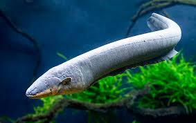

LIST ANIMALS
- Belut Listrik Electrophorus electricus
- Piranha Gigi Hitam Serrasalmus rhombeus
- Marlin Makaira sp.
- Ikan Viper Chauliodus sp.
- Candiru Vandellia cirrhosa

Belut Listrik
Electrophorus electricus
Habitat: Sungai berlumpur Amerika Selatan
Diet: Karnivora
Lifespan: 10–15 tahun
Size: Hingga ±2,5 m
Category: Predator
Belut listrik mampu menghasilkan listrik dengan tegangan tinggi untuk melumpuhkan mangsa atau mempertahankan diri. Mereka hidup di perairan keruh dengan oksigen rendah dan sering muncul ke permukaan untuk mengambil udara.